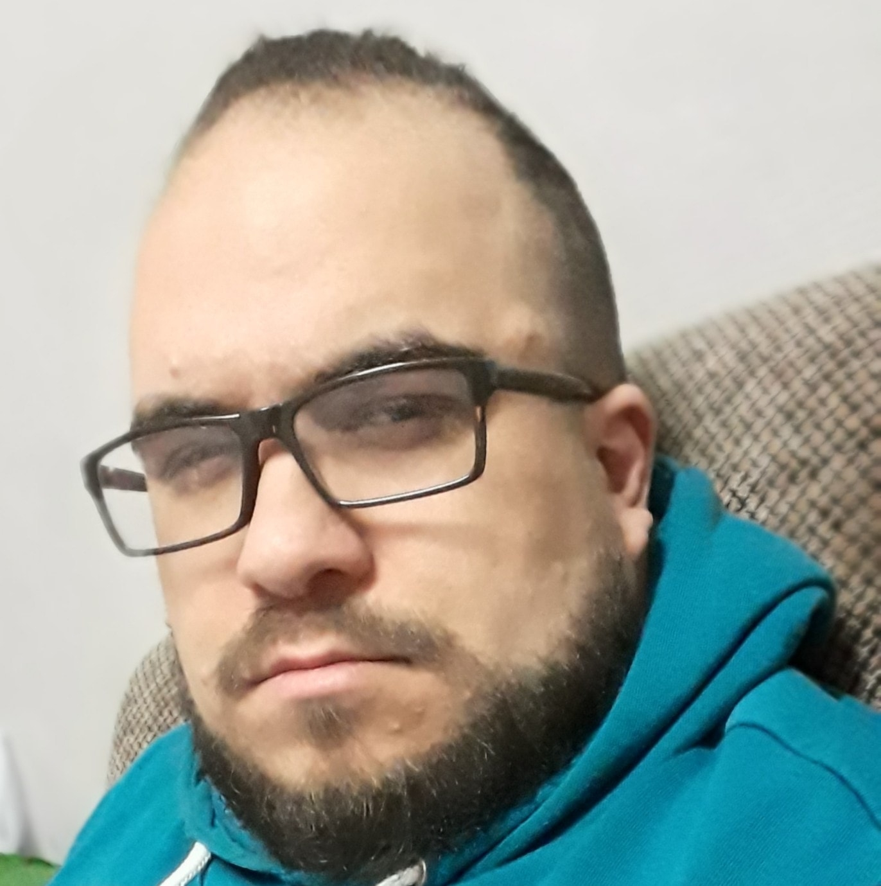

curriculum vitae
Profil
Nom : SEMLALI
Prénom : Mehdi
Adresse : 14 RUE DU QUAI 4020 LIEGE
Date de naissance : 4 MAI 1988(32 ANS)
Email : mehdi.semlali.1988@gmail.com
Téléphone : 0496/395.338

Compétences
- Flexible
- Rigoureux
- Autodidacte
- Passionné
- Curieux
- Calme/Réservé
- Tolérant
- Prudent dans ses jugements
- Intellectuel
- Organisé/Méthodique
Aptitudes
Connaissance :
HTML/CSS(bonne connaissance)
Synfony3(connaissance de
base)
Word/Excel(bonne
connaissance)
Experiences professionnelles
Les Ardentes
2010, 2011,2012, 2016 : Montage,
Démontage, Merchandising, Propreté, Accueil
Bénévoles, Parking (bénévolat)
Les Transardentes
2012, 2014, 2015, 2016 : Montage (bénévolat)
Farnell Electronic Components LTD,
BIERSET
2013 : Magasinier (travail d’étudiant)
LoadStory
Février-Mars 2014(6semaines) : Developer
node JS (stage webdeveloper)
Manifiesta
2014, 2015, 2016, 2017, 2018, 2019 : Montage, Bar
(bénévolat)
FORMATIONS
CESS en technique de sciences sociales
2009 : Institut Marie-Thérèse de Liège
BES en Webdeveloper
2012-2017 : IPEPSup Seraing (non terminé)
Junior web developer
2020: Becode (en cours)
Interets
Activités intellectuelles
Sciences et technologies
Expérience scientifique
Inventions et découvertes
Haute technologie
Engagement social
Sciences humaines
Tâches précises
Jeux vidéo
série
cinéma